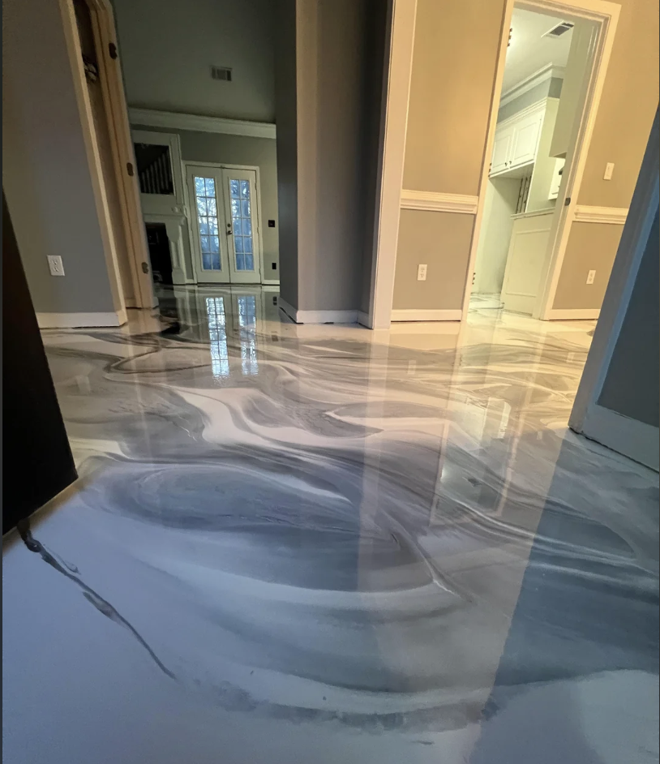

Garage Floor Epoxy Coating
The garage floor takes more abuse than any other surface in a Carmel home—road salt off winter tires, oil and brake fluid drips, heavy foot traffic, and the constant cycle of Indiana freezes and thaws. Bare concrete absorbs all of it. An epoxy coating stops that damage and gives you a surface that hoses clean in minutes.
We install full-flake epoxy systems, solid-color epoxy, and metallic epoxy. The flake system is the most popular in Carmel because it hides oil stains between cleanings, provides grip underfoot, and holds up to daily use from 2- and 3-car households without showing wear lines from tires.
Most 2-car garage jobs take two days: grinding and crack repair on day one, base coat and flake on day two. You park outside for one week while the coating fully cures, then you’re done.
Starting at $1,800 for a standard 2-car garage. Call for a free on-site estimate.
Full details: Garage Floor Epoxy →
Basement Floor Epoxy
Unfinished basement concrete in Indiana is one of the worst environments for a bare slab. Moisture migrates up from the soil, humidity cycles through summer, and the floor stays cool enough to condense water from warm air. The result is a floor that feels damp, smells musty, and sheds concrete dust with every step.
Epoxy on a basement floor changes the character of the space completely. After coating, the floor is sealed, cleanable, and non-dusting. Moisture vapor is managed at the primer stage. Most Carmel homeowners use the coated basement as a home gym, storage area, or finished living space—and the bright, reflective surface makes even a low-ceilinged basement feel bigger.
Basement floors typically have more moisture and humidity exposure than garages, so we always run a full moisture test and use a moisture-mitigation primer when readings are elevated. Call to schedule your free moisture assessment and quote.
Full details: Basement Floor Epoxy →
Polyaspartic Floor Coating
Polyaspartic is a newer class of coating that cures 3–4 times faster than standard epoxy. A garage that would take two days with a traditional epoxy system can often be done in a single day with polyaspartic—grind in the morning, coat by noon, topcoat by late afternoon, and you can park on it the next day.
Speed isn’t the only advantage. Polyaspartic coatings are UV-stable, meaning they don’t yellow in garages with sunlight exposure through windows or open doors. Standard epoxy yellows over years of UV exposure. Polyaspartic also handles Indiana’s temperature swings better—it stays flexible at low temperatures, which reduces the chance of micro-cracking through a hard winter.
The tradeoff is cost: polyaspartic materials run 20–30% more than equivalent epoxy products, and the faster cure time demands more experienced application. We’ve been installing polyaspartic since it became a reliable residential option. Call to find out if it’s the right system for your floor.
Full details: Polyaspartic Floor Coating →
Metallic Epoxy Flooring
Reflective pigment poured into clear resin and worked by hand while it is still wet, producing a marbled surface that reads like stone. Most of ours go into finished lower levels in Carmel, where a slab has to be covered with something anyway and metallic costs less installed than mid-range tile.
It is a finish surface rather than a work surface. There is no invisible spot repair, and timing matters — the floor belongs after paint and before trim, or another trade will damage something that cannot be patched. Pricing runs $7–$12 per square foot installed.
See how metallic epoxy flooring works →
Call us today for metallic epoxy flooring in Carmel, IN.
Commercial Epoxy Flooring
Offices along the Meridian corridor, medical and dental suites, Midtown retail, restaurants and light industrial space. The floor is usually the last trade in a tenant improvement and the first one squeezed when the schedule slips, so we plan backward from your opening date rather than forward from ours.
Systems differ by use: flake or solid for offices, seamless with coved base for clinical space, urethane mortar for kitchens, high-build with filled control joints for shops. Pricing runs $4–$12 per square foot depending on the system, with slab preparation quoted separately.
See how commercial epoxy flooring works →
Call us today for commercial epoxy flooring in Carmel, IN.